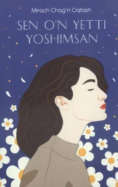

SOSevgi, ishonch va alamli kechinmalarga boy ta'sirchan ishq hikoyasi.
Mazkur asar sevgi, ishonch, mehr-oqibat, sadoqat, rashk va oila haqidagi ta'sirchan kechinmalardan iborat. Yosh yozuvchi Mirach Chag'ri Oqtosh o'quvchilarni javobsiz va alamli ishq hikoyasi bilan tanishtiradi. Asarda qahramonlarning bolalikdagi og'riqlari va o'zaro munosabatlari yoritilgan.